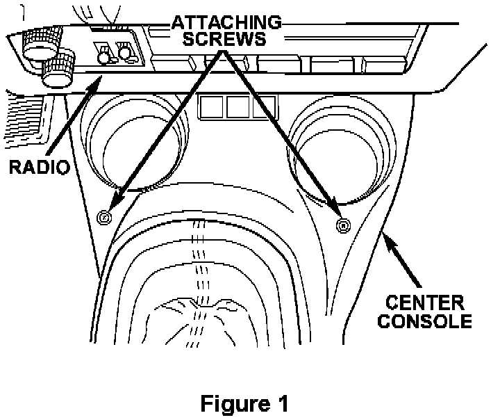
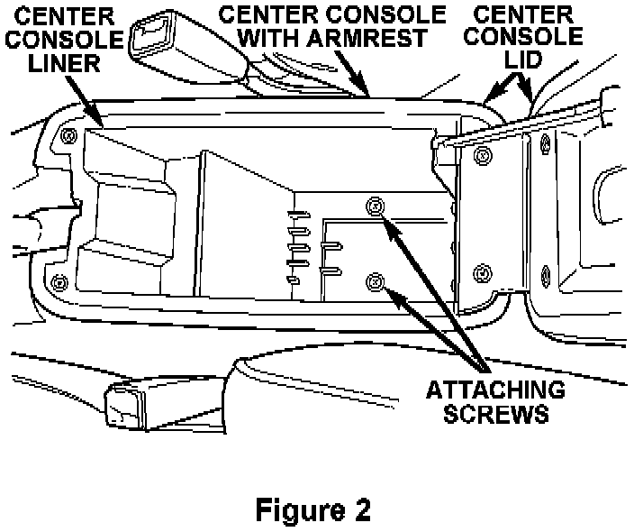
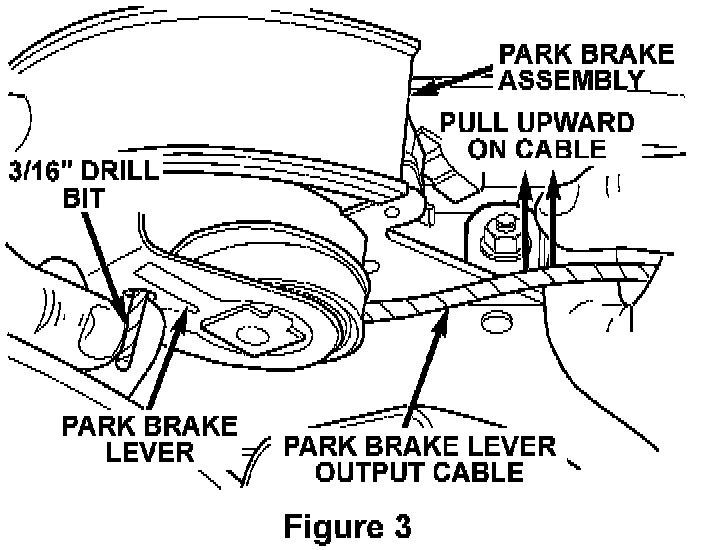
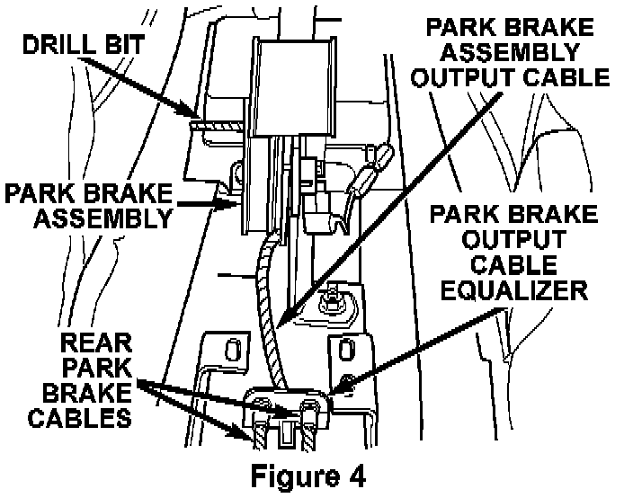
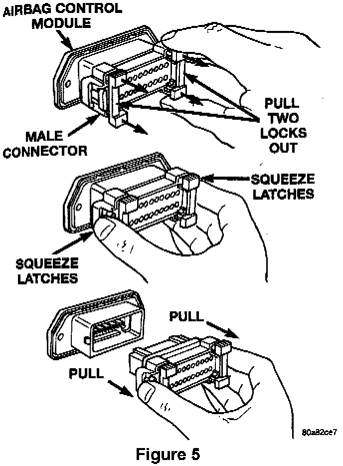

Service Procedure For Neon (PL) Vehicles:
1. With the ignition key in the OFF position, disconnect and isolate the negative battery cable. WAIT TWO (2) MINUTES FOR THE SYSTEM CAPACITOR TO DISCHARGE BEFORE CONTINUING.Note:
To enhance customer satisfaction, remember to record all radio settings before disconnecting the battery and to reset all electronic memory (clock, radio settings, etc.) when you have completed the service procedure.
2. For Manual Transmission Equipped Vehicles: Remove the shifter knob fastener and remove the shifter knob.

3. Remove the front two (2) center console attaching screws located near the cup holders (Figure 1).

4. Remove the two (2) screws at the bottom of the storage bin (Figure 2).
5. Remove the bolt access covers and the two lower console bracket bolts on each side of the console bin.
6. Raise the park brake hand lever as high as possible.
7. Remove the center console assembly.
WARNING:
The auto adjusting feature of the park brake lever assembly contains a clock spring loaded to approximately 20 lbs. DO NOT release the auto adjuster lock out device before installing the cables into the equalizer. Keep hands out of auto adjuster sector and pawl area. Failure to observe caution in handling this mechanism could lead to serious injury.
8. Lower the park brake handle.

9. Grasp the park brake lever output cable by hand and pull upward until a 3/16" drill bit can be inserted into the handle and sector gear mechanism (Figure 3). This will remove the tension from the park brake cables.

10. Remove both rear park brake cables from the park brake cable equalizer (Figure 4).
11. Disconnect the brake warning light electrical connector from the park brake lever switch.
12. Remove the two park brake lever attaching nuts and remove the park brake lever assembly.

13. Disconnect the ACM wiring connector (Figure 5):
A. Pull the two white lock bars out about 1/8" (3 mm) on each side of the connector.
B. Squeeze the two (2) connector latch tabs between your thumb and forefinger while pulling the connector out of the module.
14. Remove the remaining three (3) nuts that secure the ACM mounting bracket to the floor, disconnect the two (2) park brake lever switch wire harness clips from the ACM bracket and then remove the ACM and bracket assembly.
15. Install the provided ACM and bracket assembly with the arrow on the module pointing forward.
16. Loosely install the three (3) ACM attaching nuts.
17. Connect the wiring connector to the ACM. Make sure it is fully seated and the lock bars are engaged.
18. Install the park brake lever assembly.
19. Tighten the four (4) ACM nuts and the remaining park brake lever nut to 115 in-lbs (12.5 N.m).
20. Connect the park brake lever switch electrical connector and attach the wiring clips to the ACM bracket.
21. Install both rear park brake cables into the equalizer.
22. Pull the park brake lever handle all the way up.
23. Firmly grasp the park brake lever locking pin (drill bit) and quickly remove it from the mechanism.
24. Cycle the park brake lever once to position the park brake cables.
25. Make sure that the park brake lever is fully raised and then install the center console assembly.
26. Install the front two (2) center console attaching screws located near the cup holders (Figure 1).
27. Install the two (2) screws at the bottom of the storage bin (Figure 2).
28. Install the two (2) outer lower console bracket bolts on each side of the storage bin and then install the bolt covers.
29. For Manual Transmission Equipped Vehicles: Install the shifter knob and fastener.
30. Connect the DRB III, turn the ignition switch to the ON position and then exit the vehicle with the DRB III.
31. Reconnect the negative battery cable and then watch the airbag light in the instrument cluster, it should light for about 6-8 seconds and then go out.
32. With the DRB III, verify that no system diagnostic codes have been set.
NOTE:
If the airbag warning lamp fails to light or the light stays on, or the DRB displays a diagnostic code, a system malfunction exists. Diagnose and repair the condition following normal service procedures.